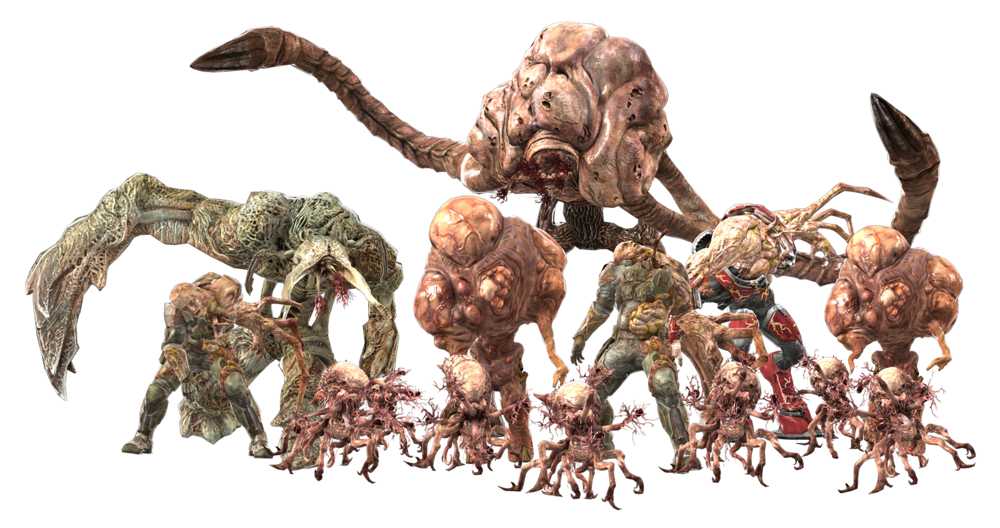

Flood
The Flood is a parasitic species that poses one of the most severe threats in the Halo universe. Known for its ability to assimilate other life forms, the Flood represents a terrifying biological force that nearly wiped out all sentient life.
Key Details
- First discovered by ancient Forerunners
- Exists as a parasitic hive mind known as the Gravemind
- Can infect any sentient life, transforming them into grotesque hosts
- One of the main reasons the Halo rings were created
Forms of the Flood
- Infection Form: Small, spore-like entities that infect hosts
- Combat Form: Reanimated corpses used for fighting
- Carrier Form: Bloated creatures that explode to release Infection Forms
- Gravemind: Central intelligence and leader of the Flood collective
Did You Know?
The Flood was so dangerous that the Forerunners activated the Halo Array—a set of galaxy-destroying weapons—to prevent the Flood from spreading. This act wiped out all sentient life in the galaxy. Want to go back to key details?